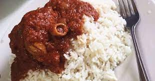

White Rie and Stew: Sunday's Special Meal
In Nigeria, White Rice & Stew is one of the most popular meal, from being one of the most prefered meal on sundays to the most porpularly sold meal in resturants.
More details bout this recepie incoming.
Ingredients required to prepare this recepie are as follows:
- Rice
- Tomato
- Pepper
- Onion
- Salt
- Meat: Chicken or Beef
- Vegetable Oil
Steps required in preperation for this recepie are as follows:
- Parboil the rice (remove the starch).
- Boil the rice until cooked.
- Boil your meat with your prefered spice (containing at least: Salt and onion).
- Fry the meat.
- Blend your Tomato, Pepper and Onions together into paste.
- Fry the paste, add the meat broth for taste and flavour to make the stew.
- Add fried meat to the cooking stew (optional).
- Allow water content to reduce and paste to be well cooked.
- Enjoy your meal.